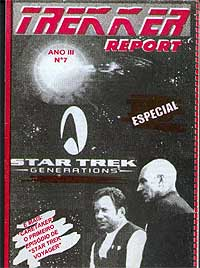
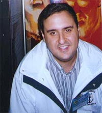
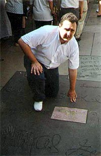

|
| Paulo Maffia em
dose dupla: editor e f
Paulo Maffia o f que conheceu o outro lado da moeda. Comeando a se enveredar pelo jornalismo editando um fanzine de Jornada nas Estrelas, ele chegou a ser editor-chefe da revista Sci-Fi News, a maior do Brasil quando o assunto fico cientfica. Saiba o que ele acha das personalidades de Jornada e do futuro do franchise no Brasil, nessa entrevista exclusiva concedida ao Trek Brasilis. |

|
Trek
Brasilis - Antes de se envolver profissionalmente com a indstria
do entretenimento, voc j editava um fanzine conhecido dos fs
de Jornada nas Estrelas, chamado Trekker Report. Como
comeou isso?  Paulo Maffia - Eu fui amigo pessoal do primeiro grupo de Jornada nas Estrelas no Brasil, o Star Trek Fan Club. Tempos depois conheci a Frota, fui na primeira conveno. Oferecemos o projeto para eles, mas eles no aprovaram. A a gente resolveu fazer sozinho. Era eu, meu irmo e mais umas duas pessoas. Comeamos a distribuir em bancas de maneira de modo meio mambembe e deu certo por um certo tempo.TB - Em termos de satisfao pessoal, seu trabalho na Sci-Fi News foi uma seqncia do Trekker Report? Maffia - Eu acho que no. Vamos dizer que a Sci-Fi News um negcio muito mais abrangente. a mesma coisa de voc estar fazendo um curta-metragem e depois entrar para fazer um longa-metragem "blockbuster". So trabalhos completamente diferentes, e eu no ligo uma coisa outra, principalmente porque o Trekker Report era especificamente Jornada e era um fanzine. TB - Na poca do Trekker Report no havia Internet. Como vocs conseguiam informaes sobre Jornada para o fanzine? Maffia - Ah, era muito engraado. Eu me lembro que um amigo meu foi pros Estados Unidos e tinha esse programa da E!, que passa os trailers, e por uma sorte absurda da vida ele foi quando estava passando o primeiro teaser do "Generations". Ele conseguiu gravar numa fita, mal e porcamente, e trouxe para c. Bom, eu sei que quando eu acordei num sbado tinha, sem brincadeira, umas trinta pessoas na minha casa, gente que eu nunca vi na vida pra ver um trailer de dois segundos. Eu lembro que eu descobri que ia ter um quarto filme de Jornada nas Estrelas pela Starlog americana. Mas assim, vinha uma Starlog americana para So Paulo inteira e era disputada no tapa, era muito mais difcil do que hoje em dia. Agora, antes do pessoal lanar, voc j v cena. Eu acho que tambm perdeu um pouco, no sei se perdeu um pouco da graa ou eu que estou ficando velho. TB - Voc acha que esse espalhamento absurdo de informaes est prejudicando Jornada nas Estrelas? Maffia - O Rick Berman deu uma entrevista ano passado que eu achei perfeita, dizendo que ele se di muito porque num dia um garoto na Iugoslvia escreve um absurdo sobre Jornada nas Estrelas, pe na internet, e trs dias depois est em todos os jornais dos Estados Unidos como verdade absoluta. TB - Agora, por mais que notcias no-oficiais de produo possam prejudicar, uma coisa que est sendo inevitvel. Maffia - Eu acho que o problema a excessiva exposio do produto, no seria nem a internet. a extrema exposio a que o produto sujeito antes de ser lanado. Eu lembro que antigamente, na dcada de 80, o merchandising dos produtos era s liberado aps a estria do filme. Hoje em dia o contrrio, bem antes voc tem brinquedos e tudo mais. Acho que o pblico se cansa um pouco. TB - As convenes que esto sendo organizadas atualmente sobre Jornada so dominadas pela Frota. Voc acha que o modelo deles adequado, eles esto no caminho certo? Maffia - Em matria de conveno de Jornada nas Estrelas, se voc for pegar a Frota, ns temos o melhor padro do mundo. Eu acho que a Frota conseguiu um "know-how", uma logstica que nunca vi na vida. Vamos supor, voc uma pessoa que nunca foi numa conveno da Frota. Tem um cara para te atender, se necessrio for colocar voc na sua cadeira, o que voc paga, voc recebe, eles tm episdios legendados, que so muito bem legendados em portugus, a organizao perfeita, acaba uma atrao, entra outra, coisa que no tem nem nos Estados Unidos. Eu acho que nesse ponto, se voc for falar no trabalho da Frota, inegvel a qualidade. Acho que a Paramount devia pegar eles e fazer padro no mundo. TB - Mas e as atraes?  Maffia - Acho o seguinte: a frmula da conveno -- conveno por episdios -- est acabando. Por qu? Porque os episdio vo comear a passar. Se o canal USA chegar para mim e falar "eu nunca mais vou querer passar nada de Jornada, eu s vou passar o que eu comprei. Suma daqui", o que sobra para as convenes? Dois anos da Nova Gerao, cinco da Deep Space Nine e cinco da Voyager, sendo que muita coisa j foi exibida. Ento, vamos ter que reinventar a frmula da Coca-Cola. Como que ns vamos fazer daqui para frente, se der certo o negcio do USA, eu no sei. Acho que deveramos diminuir o nmero de convenes por ano e fazer grandes convenes com os atores, acho que essa a sada. Pras pequenas, eu acho que palestras, brincadeiras, acho que a gente tem que reinventar. Hoje em dia, no Brasil, a conveno, com rarssimas excees, um encontro para ver episdios que voc no v na TV, e isso vai ter que mudar.TB - Mas no difcil trazer atores? Maffia - Voc tem que dividir, existem dois tipos de atores. Tem o cara que vai pela conveno, pelo evento, que eu acho que gente como o Patrick Stewart e o Jonathan Frakes, e os caras que vivem disso, que a turma da Clssica, como o George Takei. Mas estou certo de que se voc chegar pra muito ator e dizer "Olha, eu tenho uma conveno no Brasil com 4 mil pessoas no Anhembi, dou passagem, estadia e uma ajudazinha de custo, o cara vem numa boa. Acho que o Patrick Stewart, por exemplo, muito disso, mas assim, uma vez na vida, outra na morte. TB - E por que ningum procura esses caras? Maffia - Procura, que difcil. Primeiro, pra voc chegar num cara desses. Segundo, esse pessoal tem agendas, eles sabem o que eles vo fazer daqui a quatro, cinco anos, ento muito complicado voc acertar a agenda desses caras. Tambm preciso ver o tipo de contrato que ele tem com o estdio, se o estdio permite que ele venha. TB - Mudando de assunto e pulando para Jornada nas Estrelas nos Estados Unidos: Rick Berman deu entrevistas afirmando que Deep Space Nine e Voyager acabaram saindo muito "dark" para Jornada, e que eles pretendem trazer o clima da Clssica e da Nova Gerao na prxima srie. Como que voc v essas declaraes dele, voc acha que realmente Deep Space Nine e Voyager tm que ser relegados ao esquecimento? Maffia - Nunca, nunca, principalmente Deep Space Nine. Eu sou f de Deep Space Nine, que para mim foi uma das vises mais corajosas de Jornada nas Estrelas, porque eles mostraram que por trs daquela fachada linda tinha as sacanagens da Federao, tinha o que eles tinham que fazer. Eu acho que tirando o final, que eu achei fraqussimo, Deep Space Nine foi onde nenhuma srie de Jornada nas Estrelas foi. E ela vai ser descoberta daqui alguns anos, vai virar cult daqui a alguns anos. TB - Muitos dizem que Jornada est em crise nos EUA. Voc acha que a Paramount no est sabendo administrar o franchise? Maffia - A Paramount o estdio que eu mais gosto. A nica pgina negra da histria da Paramount Jornada nas Estrelas, porque eles no sabem o que e no sabem como que funciona. Eles no sabem o que tm na mo, eles nunca entenderam e nunca vo entender Jornada nas Estrelas. E olha que o melhor estdio, o que tem os melhores filmes. Raramente voc v uma bola fora da Paramount. Mas com Jornada, eles no sabem lidar. E precisavam de algum que soubesse. Eu acho que a gerao que fez A Nova Gerao, Rick Berman, Michael Piller, Jeri Taylor, esse pessoal eu admiro pra caramba. Eles salvaram Jornada nas Estrelas. O problema foi o pessoal que veio depois deles, bem fraquinho, tem raiva da Clssica, tem raiva da Nova Gerao... TB - D nome aos bois. Maffia - o Braga. Eu acho que esse cara deve ter costas quentes no estdio, porque ningum gosta dele. TB - E o Rick Berman? Maffia - Hoje sabe-se com absoluta certeza que Gene Roddenberry trouxe o Rick Berman pra trabalhar com ele, preparou ele pra ser o substituto dele porque ele sabia que um dia ia brigar com o estdio, ou ia ficar doente e morrer. Para quem no sabe, o Rick Berman um cara premiado com Oscar, com vdeos educativos, ele tinha um trabalho de documentarista enorme. TB - E o que voc acha do Gene Roddenberry? Maffia - Acho que tem muita lenda em cima dele. Eu acho que vou ser morto pelo que vou falar, mas toda vez que ele meteu a mo em Jornada, Jornada quase quebrou. A Srie Clssica quem abandonou no segundo ano foi ele, o primeiro filme saiu horrvel por causa dele e ele tinha o pssimo hbito tambm de sacanear roteirista. O cara entregava o roteiro, ele levava o roteiro pra casa, mexia e botava o nome dele. O cara era trara, tinha defeitos com qualquer outra pessoa. TB - Agora, o projeto que mais se fala atualmente do dcimo filme de Jornada. Os Romulanos so os mais cotados como viles. Voc acha que deveriam promover a volta de Spock? Maffia - Eu acho que a volta do Spock seria um grande tema. E tem mais: o Leonard Nimoy infelizmente humano, vai morrer daqui a alguns anos, e a histria do Spock vai ficar com aquele gancho. No acho que a gente deva matar o Spock, mas vamos l resgat-lo. A idia de fazer uma reunificao entre Romulanos e Vulcanos fantstica, eu no sei o que o pessoal tem contra "Unification". Eu acho um grande episdio, eu choro toda vez que eu vejo. TB - Para concluir, o que voc prev para o futuro de Jornada no Brasil?  Maffia - Eu acho que agora vai. Acho que o canal USA vai consolidar, e por causa de uma consolidao do canal USA, os clubes e os fs vo ter que ver Jornada nas Estrelas de uma maneira um pouco mais sria. O f tem que se organizar, as empresas, e eu ponho a Sci-Fi News no meio, tm que se profissionalizar mais. Eu sempre dizia que Jornada um trem, e que os episdios so o carvo. no adianta voc colocar nesse trem quarenta vages, se voc no tinha o carvo. Agora, nosso trem, que era pequenininho, est podendo ficar um pouco maior.
|